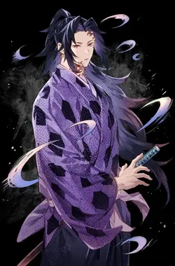
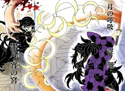
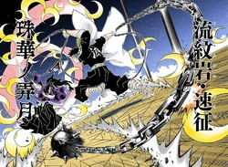
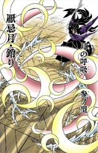
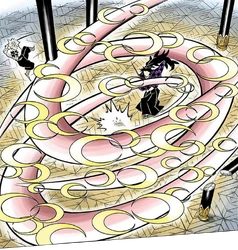
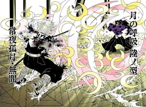

A Respiração da Lua, derivada da Respiração do Sol, possui 6 formas conhecidas, desenvolvidas por Michikatsu Tsugikuni antes de se tornar um Oni.
Como de costume, a primeira forma é relativamente simples, mas ainda assim poderosa.
O usuário faz dois cortes com a espada, gerando lâminas caóticas que são lançadas em todas as direções, cortando tudo o que tocarem.
Semelhante à segunda forma, mas com dois cortes em formato de lua que geram lâminas caóticas, causando grande destruição em área.
O usuário realiza vários cortes curvados, um sobre o outro, criando um vórtice. Todas as criaturas em um cone à sua frente são afetadas.
O usuário realiza uma série de cortes em forma de lua crescente à sua frente, causando danos devastadores.
Ao balançar sua espada em um arco, o usuário cria uma onda de destruição em várias direções, deixando marcas profundas no chão e empurrando os inimigos para trás com facilidade.

Espada de Michikatsu Tsugikuni:
☞ Material do punho: Madeira
☞ Comprimento da lâmina: 76 cm
☞ Comprimento do punho: 28 cm
☞ Peso: 890 g
☞ Coloração da espada: Roxo